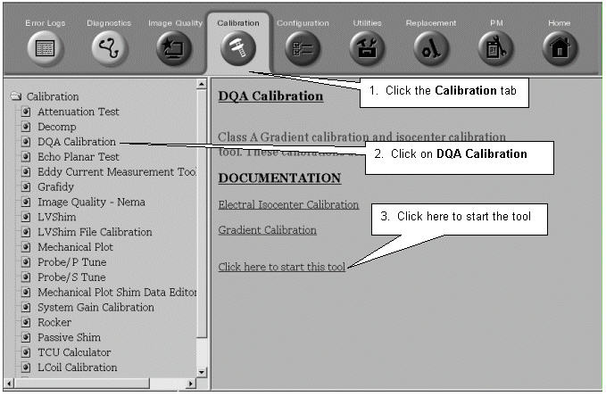
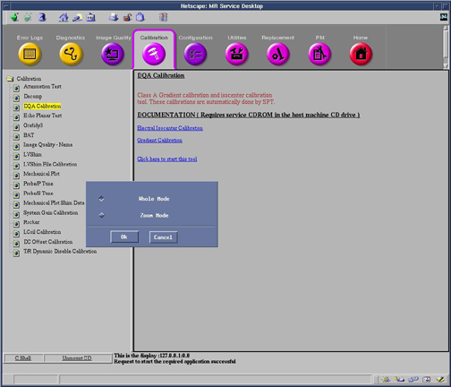

Operating Documentation
Direction 5440000, Rev# 5
Signa HDxt Service Methods
Module Version 1.0, Version Date 5/3/07
Operating Documentation |
| Required Persons | Preliminary Reqs | Procedure | Finalization |
|---|---|---|---|
| 1 | Not Applicable | Not Applicable | Not Applicable |
This section describes the procedure for analyzing the x-gradient scan. The procedure for the y-gradient and z-gradient scans is similar.
| NOTE: | If the Z measurement is not even close to 100mm, there may be a bubble in the phantom causing the incorrect measurement. Open a C shell and type setftg to turn off Fast TG, then rescan the z axis. After the completion of gradcal, type resetftg to turn Fast TG back on. |
To start the DQA Calibration tool, refer to the instructions on Illustration 1.
Illustration 1: STARTING THE DQA CALIBRATION TOOL

Select the Grad Mode you need to calibrate if TwinSpeed. See Illustration 2.
Illustration 2: elect GradMode, Whole or Zoom

Perform correct scan (WHOLE/ZOOM), (X, Y or Z). See Table 1.
Table 1: Running Gradcal Scans
Step through the Calibration Screens as shown in the following Illustrations:
Illustration 3:

Illustration 4:

Instructions for changing cfxfull, cfyfull, cfzfull CV's.
Right click on [Research Options].
Select [Display CV's].
Type the desired CV Name in the [CV Name Field] and hit <Enter>.
Type the new value in [Current Value] field and click <Enter>.
Click [Accept].
Right click on [Research Options] and select [Download].
Illustration 5:

Record the final gradient calibration results in Table 2, Gradcal Data Sheet.
Be sure to complete all three planes and both Grad Modes for Twinspeed, before continuing further with this procedure.
When all three gradient fields have been calibrated (and for the TwinSpeed, separately for each GradMode), the Signa software must be shut down and rebooted to install the changes in the MRconfig.cfg file(s).
Follow the instructions as given in Illustration 6 for rebooting Signa
Illustration 6: SystemRestart

The following warning message will be displayed:
WARNING: System Shutdown?
Please avoid or delay shutdown IF
film composer or archive process
is still active
Click the [Yes] button in the message box.
“Shutting down the system” will appear in the message box.
Wait until Signa logout is complete.
Restart the system software by double-clicking on the [Signa] icon (or type signa in the first field), then type the password adw2.0 and press <Enter>. Allow initialization to fully complete before pressing any keys.
Store all completed data sheets for future reference.
Gradcal Data Sheets
Table 2: Gradcal Data Sheet
| MEASUREMENT (GradMode=_______) | FINAL MEASUREMENT (mm) Spec = 99 to 101 | FINAL CV VALUE |
| X GRADIENT | (cfxfull) | |
| Y GRADIENT | (cfyfull) | |
| Z GRADIENT | (cfzfull) | |
| MEASUREMENT (GradMode=_______) | FINAL MEASUREMENT (mm) Spec = 99 to 101 | FINAL CV VALUE |
| X GRADIENT | (cfxfull) | |
| Y GRADIENT | (cfyfull) | |
| Z GRADIENT | (cfzfull) |
Illustration 7: CORRECTION FORMULA

Insure you've completed calibration on all three gradient planes.